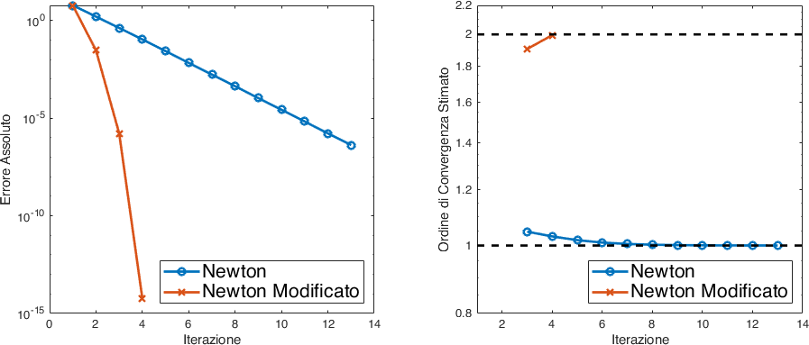

Laboratorio 7 : Il Metodo di Newton#
Nello scorso laboratorio abbiamo affrontato il problema di trovare lo zero di una funzione continua \(f : \mathbb{R} \to \mathbb{R}\) utilizzando il metodo di bisezione. Il passo successivo visto a lezione è quello di costruire un metodo che, a patto di avere funzioni di regolarità più alta, \(f \in \mathcal{C}^{2}(\mathbb{R})\), permette di ottenere una velocità di convergenza maggiore.
Prima di dedicarci all’implementazione, riprendiamo brevemente l’idea e la costruzione del metodo. L’idea è di cominciare con una approssimazione iniziale che sia ragionevolmente vicina alla radice dell’equazione che vogliamo risolvere. Approssimiamo in quel punto la funzione con la tangente, calcoliamo la sua intercetta con l’asse delle \(x\) e quella è la nuova approssimazione per la radice. Possiamo iterare la procedura come:
Per cui avete dimostrato il seguente teorema di convergenza.
Teorema
Sia \(f \in \mathcal{C}^{2}([a,b])\), e supponiamo inoltre che \(f(c) = 0\), \(f'(c) \neq 0\) per qualche \(c \in [a,b]\). Allora esiste un \(\delta > 0\) tale per cui l’iterata (11) applicata ad \(f\) converge a \(c\) per ogni valore iniziale \(x_0 \in [c-\delta,c+\delta]\).
Ricordate queste caratteristiche iniziali, possiamo procedere ad implementare una versione MATLAB dell’algoritmo di Newton.
Esercizio 1
Si implementi in una funzione MATLAB l’algoritmo di Newton sfruttando l’iterata descritta in (11). Un template della funzione da implementare che si può adottare è quindi il seguente:
function [c,residuo] = newton(f,fp,x0,maxit,tol)
%%NEWTON Implementazione del metodo di Newton
% Input: f function handle della funzione di cui si cerca lo zero
% fp function handle della derivata prima della funzione
% x0 approssimazione iniziale
% maxit numero massimo di iterazioni consentite
% tol tolleranza sul residuo
% Output: c radici candidate prodotte dal metodo
% residuo vettore dei residui prodotto dal metodo
end
È importante che la funzione implementata
faccia il controllo degli input,
pre-allochi la memoria per i vettori
ceresiduo,riduca al minimo le chiamate ad \(f(\cdot)\).
Per testare l’algoritmo implementato si può usare
%% Script di test per il metodo di Newton
clear; clc;
f = @(x) x.^3 - 2*x - 5;
fp = @(x) 3*x.^2 -2;
maxit = 200;
tol = 1e-6;
ctrue = 2.09455148154232659;
x0 = 3;
[c,residuo] = newton(f,fp,x0,maxit,tol);
Da cui otteniamo
Iterata 1 c = 3.000000 residuo = 1.600000e+01
Iterata 2 c = 2.360000 residuo = 3.424256e+00
Iterata 3 c = 2.127197 residuo = 3.710998e-01
Iterata 4 c = 2.095136 residuo = 6.526626e-03
Iterata 5 c = 2.094552 residuo = 2.146143e-06
Iterata 6 c = 2.094551 residuo = 2.327027e-13
Convergenza raggiunta in 6 iterazioni
Convergenza#
Possiamo confrontare il metodo di Newton con il metodo di bisezione implementato nella scorsa lezione, sfruttiamo lo stesso caso di test dell’Esercizio 1 e aggiungiamo allo script di test del metodo di Newton:
a = 1;
b = 3;
maxit = 200;
tol = 1e-6;
[c2,residuo2] = bisezione(f,a,b,maxit,tol);
n = 1:length(residuo);
n2 = 1:length(residuo2);
semilogy(n,abs(c-ctrue),'ro-',...
n2,abs(c2-ctrue),'bx-','LineWidth',2);
legend({'Metodo di Newton','Metodo di Bisezione'},'FontSize',14);
xlabel('Iterazione')
per cui vediamo una rappresentazione in Fig. 15. Come ci aspettavamo dall’analisi teorica, il metodo di Newton è in questo caso di ordine \(2\). Possiamo investigare l’ordine di convergenza anche in maniera numerica.
Per farlo ricordiamo che una successione di approssimate \(\{x_n\}_n\) che converge ad \(x\) ha ordine di convergenza \(p \geq 1\) se
Possiamo sfruttare la definizione per ottenere una stima dell’ordine di convergenza mediante i rapporti:
che possiamo implementare in una funzione MATLAB come
function q = convergenza(xn, xtrue)
%%CONVERGENZA produce una stima dell'ordine di convergenza della
%%successione x_n ad xtrue.
e = abs(xn - xtrue);
q = zeros(length(e)-2,1);
for n = 2:(length(e)-1)
q(n-1) = log(e(n+1)/e(n))/log(e(n)/e(n-1));
end
end
E se lo applichiamo al vettore c e alla ctrue prodotta dal metodo di Newton
otteniamo i valori
>> p = convergenza(c,ctrue)
p =
1.7080
1.9194
1.9936
1.9996
che ci conferma che l’ordine di convergenza si avvicina a \(2\).
Approssimare la derivata prima#
Non sempre possediamo o possiamo calcolare in forma chiusa la derivata della funzione \(f\). Può essere utile approssimarla direttamente a partire utilizzando solo la \(f\). Possiamo farlo in maniera numerica sfruttando la definizione stessa di derivata:
prendendo un \(h\) sufficientemente piccolo, una buona scelta è \(h = \sqrt{\varepsilon}\) per \(\varepsilon\) la precisione di macchina.
Esercizio 2
Si modifichi il codice dell’Esercizio 1 per utilizzare l’approssimazione della derivata in (12).
Radici multiple#
Dalla teoria sappiamo che l’ordine di convergenza del metodo di Newton è ridotto quando la radice che \(c\) di \(f\) che cerchiamo è di ordine più elevato.
Suggerimento
Ricordiamo che se \(c\) è una radice di \(f\) il suo ordine è il più piccolo \(q\) per cui \(f^{(q)}(c) \neq 0\).
Ad esempio \(f(x) = (x-2)^2\), \(f(2) = 0\), \(f'(x) = 2(x-2)\), \(f'(2) = 0\), ma \(f''(x) = 2\) per cui \(f''(2) \neq 0\) e dunque l’ordine è \(q=2\).
Possiamo modificare il metodo di Newton per recuperare l’ordine quadratico di convergenza se sappiamo l’ordine \(q\) della radice che stiamo cercando. Si tratta di modificare l’iterazione come:
Esercizio 3
Si modifichi la funzione dell”Esercizio 1 con una che implementi l’iterazione (13). Cioè con una funzione che abbiamo tra gli input anche l’ordine \(q\) della radice.
Un prototipo della funzione è quindi
function [c,residuo] = mnewton(f,fp,x0,q,maxit,tol)
%%NEWTON Implementazione del metodo di Newton
% Input: f function handle della funzione di cui si cerca lo zero
% fp function handle della derivata prima della funzione
% x0 approssimazione iniziale
% q ordine della radice da calcolare
% maxit numero massimo di iterazioni consentite
% tol tolleranza sul residuo
% Output: c radici candidate prodotte dal metodo
% residuo vettore dei residui prodotto dal metodo
end
Dopo averlo implementato possiamo testarlo con il seguente script
%% Script di test per il metodo di Newton modificato
clear; clc;
f = @(x) x.^3 + 2*x.^2 -7*x + 4;
fp = @(x) 3*x.^2 +4*x -7;
maxit = 200;
tol = 1e-6;
ctrue = 1;
x0 = 2;
[c,residuo] = newton(f,fp,x0,maxit,tol);
x0 = 2;
q = 2;
[cm,residuom] = mnewton(f,fp,x0,q,maxit,tol);
Per vedere la differenza nell’ordine di convergenza possiamo usare la funzione
convergenza che abbiamo discusso nella sezione Convergenza e
rappresentare di nuovo in maniera grafica il residuo.
q = convergenza(c,ctrue);
qm = convergenza(cm,ctrue);
figure(1)
subplot(1,2,1)
semilogy(1:length(residuo),residuo,'o-',...
1:length(residuom),residuom,'x-','LineWidth',2);
xlabel('Iterazione')
ylabel('Errore Assoluto')
legend({'Newton','Newton Modificato'},'FontSize',16,...
'Location','southeast');
subplot(1,2,2)
semilogy(3:length(residuo),q,'o-',...
3:length(residuom),qm,'x-',...
1:14,ones(14,1),'k--',...
1:14,2*ones(14,1),'k--','LineWidth',2);
xlabel('Iterazione')
ylabel('Ordine di Convergenza Stimato')
legend({'Newton','Newton Modificato'},'FontSize',16,...
'Location','southeast');
axis([1 14 0.8 2.2])
Quello che osserviamo dalla Fig. 16 è esattamente quanto previsto dalla teoria. La versione non modificata di Newton ha convergenza lineare, mentre la versione modificata ha un chiaro comportamento quadratico.

Fig. 16 Convergenza del metodo di Newton per radici multiple, confronto tra il caso standard e quello modificato.#
Esempi di applicazioni#
Consideriamo alcune applicazioni ingegneristiche del problema di trovare lo zero di una funzione [Kiu15].
Esercizio 4: Energia libera di Gibbs
L’energia libera di Gibbs di una mole di idrogeno alla temperatura \(T\) è
dove \(R = 8.31441\,J/K\) è la costante dei gas e la temperatura iniziale è \(T_0 = 4.44418\,K\). Si determini la temperatura a cui \(G = -10^{5}\,J\).
Esercizio 5: Sistema molle–ammortizzatore
Consideriamo il sistema accoppiato di molle e ammortizzatori in Fig. 17. I due blocchi di massa \(m\) sono connessi tra di loro da due molle e da un ammortizzatore. Il coefficiente elastico di ognuna delle due molle è dato da \(k\), mentre \(c\) è il coefficiente che regola l’attenuazione causata dall’ammortizzatore. Quando il sistema è messo in posizione e rilasciato, la posizione di ogni blocco durante il moto ha la forma
dove \(A_k\) e \(\phi_k\) sono costanti, e \(\omega = \omega_r \pm i \omega_i\) sono le radici dell’equazione
Si determinino le possibili combinazioni di \(w_r\) e \(w_i\) se \(c/m = 12\,s^{-1}\), e \(k/m = 1500 s^{-2}\).
Esercizio 6
Si re-implementino/modifichino gli esercizi del Laboratorio 6 : Il Metodo di Bisezione cambiando dal metodo di Bisezione al metodo di Newton.
Bibliografia#
Jaan Kiusalaas. Numerical Methods in Engineering with MATLAB®. Cambridge University Press, 3 edition, 2015. doi:10.1017/CBO9781316341599.